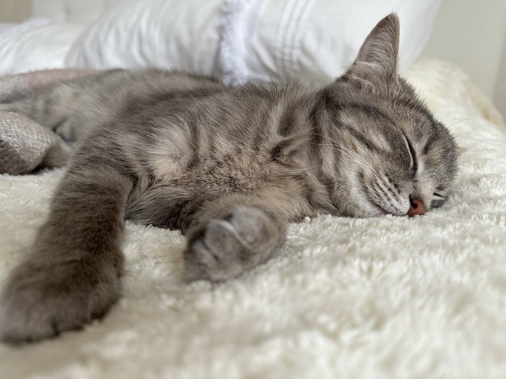

Список обязанностей
- Кот должен отсыпаться за человека, всех его родственников, друзей и соседей вместе взятых.
- Кот должен защищать человека от комнатных растений.
- Кот должен поддерживать человека в форме, заставляя его двигаться и наклоняться за ручками, карандашами, носками и т. д.
- Кот должен крепко держать зубами ручку или карандаш, пока человек пытается писать.
- Кот должен проводить ревизию в холодильнике, особенно если человек против — значит, там есть тайны.
- Кот должен ночью каждый час проверять, не заползла ли под одеяло какая-нибудь змея.
- Кот должен тренироваться к цирковому выступлению: полёты под куполом дома, прыжки с гардины на люстру и обратно.
- Кот должен помогать стелить постель, чтобы под простынёй не оказалось лишних предметов.
- Кот должен будить спящего человека, прыгая на живот, а ещё лучше — на голову.
- Кот должен напоминать пословицу: «Кто рано встаёт, тому Бог даёт» — и чем раньше, тем больше.
- Кот должен делиться всем: отдавать часть меха на утепление и выбрасывать половину еды из чашки.
- Кот должен петь песни для радости человека, даже если песни грустные.
- Кот должен проверять причины незакрытых шкафов, тумбочек и выдвинутых ящиков.
- Кот должен отгонять дурные сны, прыгая на голову при малейшем ворочании.
- Кот должен знать, что в коробках и пакетах, и лично проверять удобство нахождения там.
- Кот должен во время сна человека заглушать наружный шум громким урчанием под ухом.
🐾 Котики — мастера на все лапы!
Ключевые компетенции кота
- Охрана: растения, шкафы, холодильник.
- Фитнес-тренер: поддержание активности человека.
- Будильник: ранние подъёмы и профилактика сна.
- Технический контроль: ручки, карандаши, постель, коробки, пакеты.
- Звукоизоляция: урчание как шумоподавление.
Ссылочки
Фото питомца 🐾
